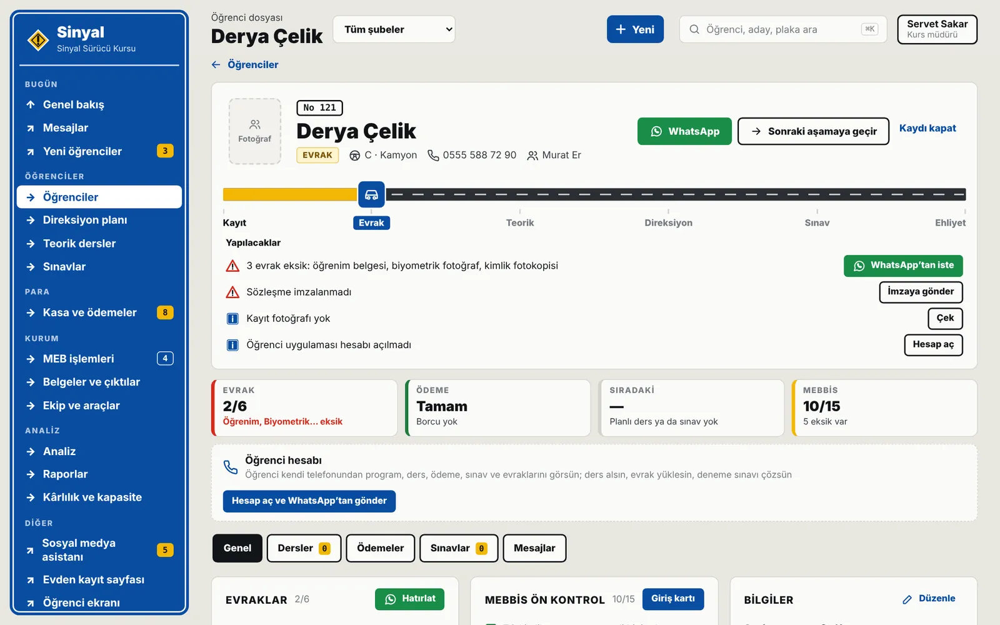
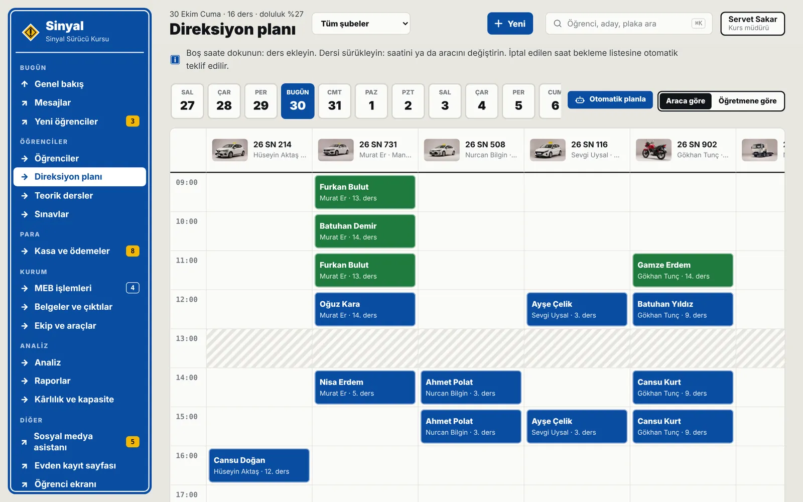
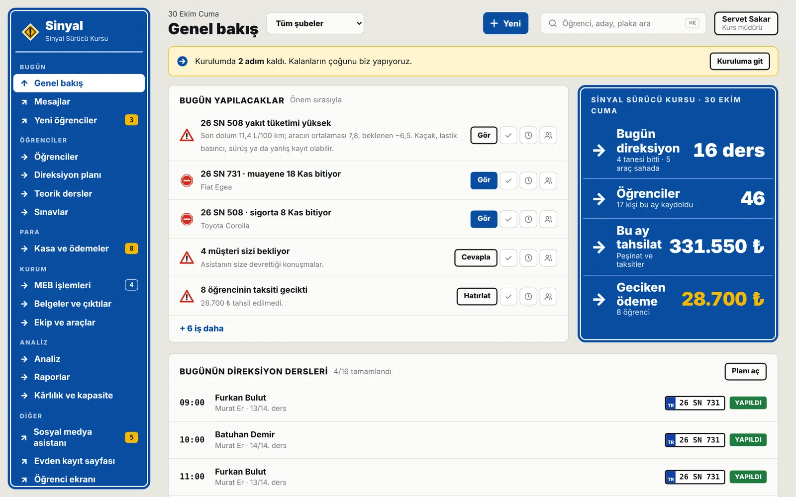
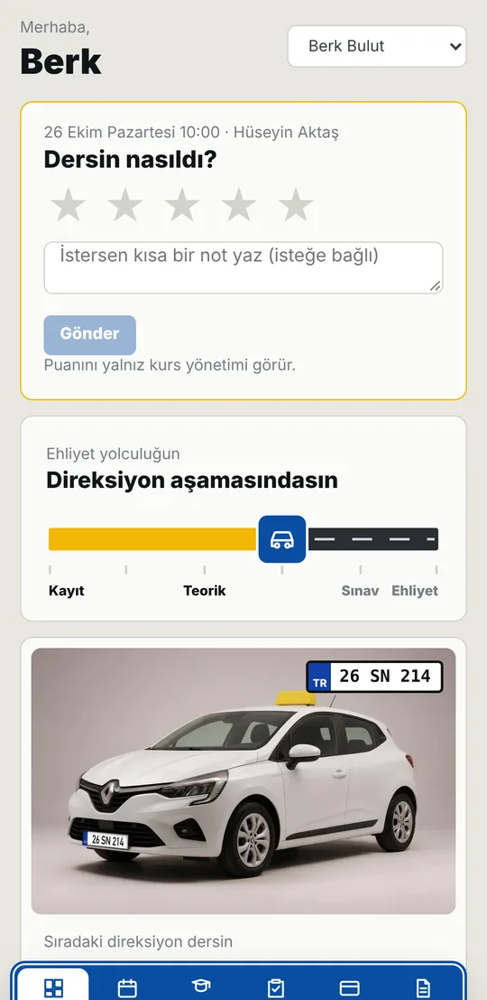
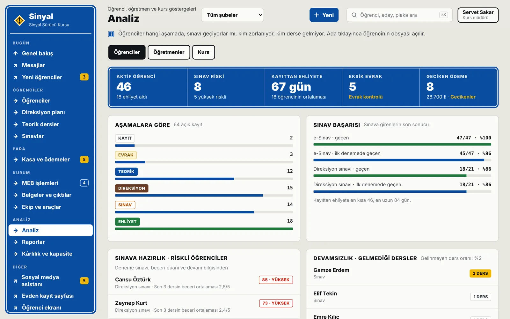

Özellikler
Bir sürücü kursunun bütün işi, tek yerde.
Kayıttan ehliyete: evrak, direksiyon planı, sınav, ödeme, MEB ve WhatsApp. Müdür, ön büro, öğretmen ve öğrenci aynı sistemde, her biri kendi ekranında.
Kayıt ve evrak
Aday evden kaydolur, belgeleri telefondan gelir.
Kayıt linkini WhatsApp’tan gönderirsiniz; aday bilgilerini kendisi girer, belgelerinin fotoğrafını yükler ve sözleşmeyi telefonundan imzalar. Eksik evrak kendiliğinden listelenir.
- Evden kayıt linki ve uzaktan sözleşme imzası
- Eksik evrak listesi ve hatırlatma mesajı
- MEB kaydı için gereken bilgiler kayıtta toplanır
- Aynı TC ile ikinci kayıtta uyarı

Direksiyon planı
Haftanın bütün dersleri tek ekranda.
Araca ya da öğretmene göre gün, hafta ve ay görünümü. “Otomatik planla” dersleri öğretmenin ve aracın boş saatlerine dağıtır; çakışmayı kayıttan önce gösterir.
- Araca ve öğretmene göre görünüm
- Otomatik planlama ve çakışma uyarısı
- Öğrenci ders değişikliğini WhatsApp’tan ister; 24 saat kuralıyla uygun saatler sunulur
- Öğretmenin haftalık programı Excel düzeninde, indirilebilir

Teorik dersler ve sınavlar
Yoklamadan sınav sonucuna kadar.
Teorik ders programı ve yoklama, e-sınav ve direksiyon sınavı listeleri, sonuçlar ve kalan sınav hakları tek yerde. Öğrenci deneme sınavlarını kendi telefonundan çözer.
Teorik ders programı ve yoklama
e-Sınav ve direksiyon sınavı listeleri
Sonuç ve sınav hakkı takibi
Öğrenci uygulamasında deneme sınavları
Ödeme ve kasa
Kim ne ödedi, kim gecikti, bir bakışta.
Kayıtta taksit planı oluşur; tahsilatta makbuz kesilir. Geciken taksitler listelenir, hatırlatma WhatsApp’tan tek dokunuşla gider. Mali müşavire Excel paketi hazırdır.
- Taksit planı ve makbuz
- Geciken ödemeler ve WhatsApp hatırlatma
- Günlük kasa ve aylık özet
- Mali müşavir için Excel paketi

MEB ve MEBBİS
MEBBİS’e girilecek her şey hazır sırada.
Hangi öğrencinin MEB kaydı hazır, hangisinde evrak eksik, Sinyal gösterir. MEBBİS Yardımcısı (Chrome eklentisi) formları sizin MEBBİS oturumunuzda doldurur; MEBBİS şifrenizi istemez, “Kaydet”e siz basarsınız.
MEB işlemleri listesi: hazır olanlar ve eksikler
MEBBİS Yardımcısı: formu doldurur, kaydı siz onaylarsınız
Belgeler ve resmi çıktılar
WhatsApp asistanı
Hatırlatmalar kursun kendi numarasından gider.
Ders, ödeme ve sınav hatırlatmaları kursunuzun WhatsApp Business hattından gönderilir. Asistan adayların ücret, evrak ve ders saati sorularını gece gündüz cevaplar; bilemediğini size devreder.
Ders, ödeme ve sınav hatırlatmaları
Adaylara 7/24 ilk cevap; bilemediği soruyu size devreder
Öğrencinin ders değişikliği isteği otomatik akışla
Gelen mesajlar tek kutuda
Öğrenci uygulaması
Öğrenci her şeyi telefonundan görür.
Kayıtta giriş bilgisi WhatsApp’tan gider. Öğrenci derslerini, ödemelerini, sınavlarını ve belgelerini görür; uygulamayı telefonunun ana ekranına ekler.
- Sıradaki ders ve ders geçmişi
- Ödeme planı ve kalan borç
- Sınav takibi ve deneme testleri
- Belge yükleme

Öğretmen uygulaması
Usta öğretici yalnız kendi işini görür.
Öğretmen bugünkü derslerini görür, dersi başlatıp bitirir, öğrenciye imza attırır. Haftalık programı ve kazancı kendi ekranındadır; kursun diğer bilgilerine erişmez.
Bugünkü dersler ve sıradaki öğrenci
Ders başlat, bitir ve imza
Haftalık program (Excel düzeninde)
Kazanç ve ödeme özeti
Raporlar ve analiz
Kurs nasıl gidiyor, rakamlarla.
Aylık kayıt, tahsilat, sınav başarısı, adaydan kayda dönüşüm ve araç-öğretmen doluluğu. Kârlılık ve kapasite ekranı ders başına ne kazandığınızı gösterir.
- Kayıt, tahsilat ve sınav başarısı
- Adaydan kayda dönüşüm
- Kârlılık ve kapasite

Güvenlik ve yedek
Veriniz sizin; her gün yedeklenir.
Herkes kendi hesabıyla girer ve yalnız kendi rolünün ekranlarını görür. Her gün iki ayrı yere yedek alınır; yapılan her işlem sunucuda kayıt altındadır.
Her gün iki ayrı yere yedek
Rol bazlı erişim: müdür, ön büro, öğretmen, öğrenci
Değiştirilemeyen işlem kaydı
KVKK: veri işleme sözleşmesi ve anonimleştirme
Kendiniz görün.
Demo örnek bir kursla açılır; hiçbir mesaj kimseye gitmez. Kurulum için WhatsApp’tan yazın.